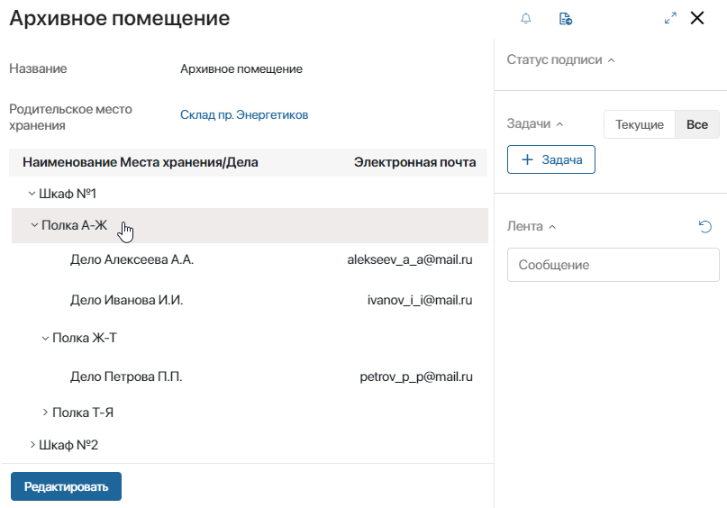
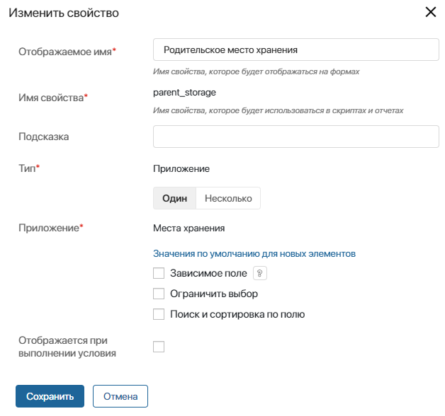
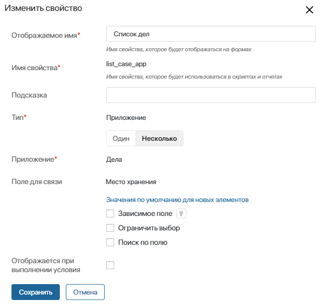
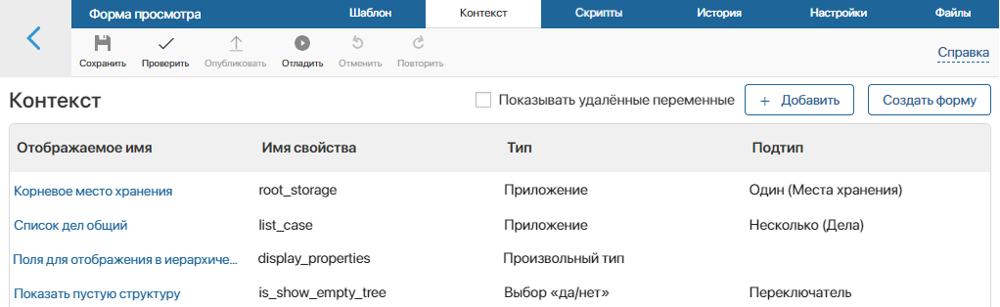
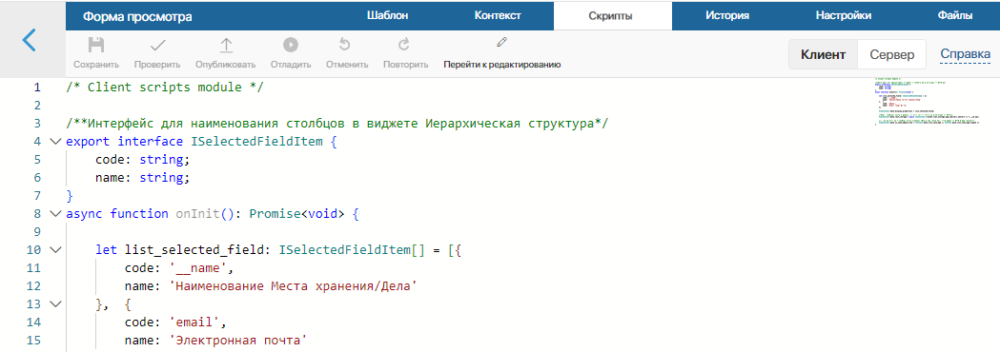
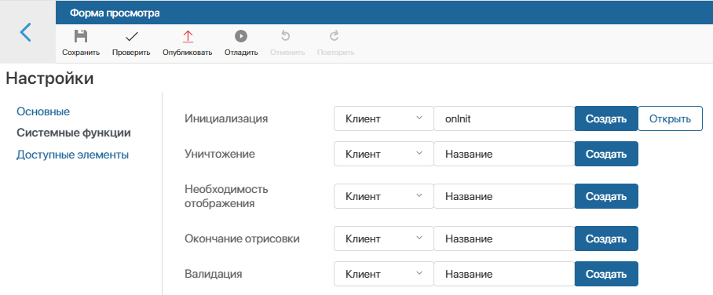
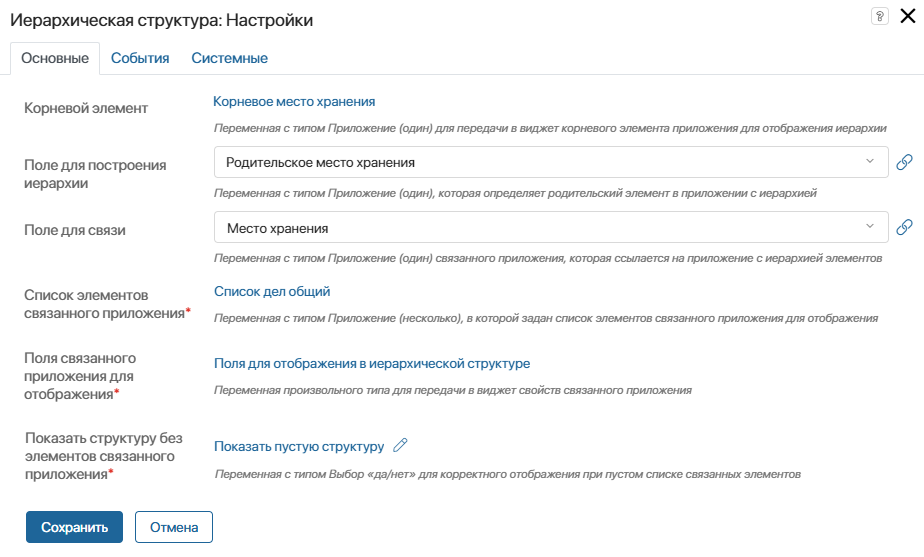
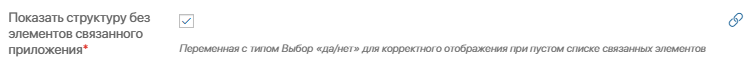

Виджет позволяет отобразить данные двух связанных приложений в виде иерархической структуры. Пользователь увидит:
- иерархию элементов одного приложения в виде дерева, которое построено от заданного корневого элемента;
- списки элементов второго приложения, связанных с первым, а также данные этих элементов, которые переданы в виджет для их отображения.
Рассмотрим пример для двух приложений:
- Места хранения — содержит элементы, обозначающие склады, помещения, шкафы и полки. С помощью свойства Родительское место хранения в приложении задана подчинённость его элементов, которая отобразится в виджете: в складах есть помещения, в помещениях — шкафы, а в шкафах — полки;
- Дела — связано с приложением Места хранения. В карточке дела пользователь выбирает место его хранения. Так образуются списки дел, привязанные к определённым местам хранения. Эти списки с их данными, которые заданы для отображения, также можно показать в виджете.

В нашем примере виджет Иерархическая структура размещён на форме просмотра приложения Места хранения. Открыв карточку элемента Архивное помещение, пользователь увидит иерархию его дочерних мест хранения (шкафы и полки в этих шкафах), а также списки дел с разбивкой по шкафам и полкам, на которых эти дела хранятся. Кроме того, отобразится адрес email, заданный в карточке каждого дела.
Обратите внимание, для работы виджета используется клиентский скрипт. Он передаёт в виджет данные о корневом элементе первого приложения, а также списки элементов второго приложения, связанного с первым.
Настроить работу виджета «Иерархическая структура»
Рассмотрим настройки, которые нужно выполнить для указанного выше примера. Они состоят из следующих этапов:
- Дополнить настройки формы приложения.
- Создать служебные переменные для работы виджета.
- Создать скрипт для работы виджета.
- Добавить функцию инициализации.
- Настроить виджет.
Шаг 1. Дополнить настройки формы приложения
- Откройте Настройки формы приложения Места хранения и на вкладке Контекст добавьте следующие свойства:
- Родительское место хранения — задаёт иерархию элементов, которая отобразится в виджете. В настройках свойства выберите тип Приложение (один) и укажите текущее приложение Места хранения;

- Список дел – определяет перечень элементов приложения Дела, связанных с текущим местом хранения, для их отображения в виджете. В настройках свойства выберите тип Приложение (несколько), укажите приложение Дела и поле для связи Место хранения.

- Вынесите свойство Родительское место хранения на формы создания, просмотра и редактирования приложения Места хранения. Это позволит пользователю указать родительский элемент в карточке места хранения и таким образом задать иерархию, которую покажет виджет Иерархическая структура.
Шаг 2. Создать служебные переменные для работы виджета
На этом этапе создайте переменные, которые нужны для заполнения настроек виджета. Их значения определяются с помощью скрипта.
- В дизайнере интерфейсов откройте форму просмотра приложения Места хранения и перейдите на вкладку Контекст.
- Добавьте следующие переменные:

- Корневое место хранения (
root_storage) — передаёт в виджет значение элемента, от которого строится иерархия его дочерних элементов. Эта переменная с типом Приложение (один) в нашем примере ссылается на текущее приложение Места хранения; - Список дел общий (
list_case) — передаёт в виджет списки дел корневого и дочерних элементов, чтобы отобразить их. Эта переменная с типом Приложение (несколько) ссылается на приложение Дела; - Поля для отображения в иерархической структуре (
display_properties) — переменная произвольного типа, которая передаёт в виджет свойства приложения Дела для их отображения. В нашем примере в виджет передано свойство Электронная почта; - Показать пустую структуру (
is_show_empty_tree) — переменная типа Выбор «да/нет», которая определяет, нужно ли отобразить в виджете список дел для корневого элемента. Если в корневом месте хранения нет списка дел, то есть структура этого списка пустая, то свойству присваивается значение true.
Шаг 3. Создать скрипт для работы виджета
Теперь в дизайнере интерфейсов перейдите на вкладку Скрипты и создайте клиентский скрипт для работы виджета.

В скрипте задайте значения для переменных, созданных на предыдущем шаге, которые будут переданы в виджет через его настройки. Определите:
- корневой элемент иерархии, заполнив переменную
root_storage. В нашем примере в качестве корневого учитывается текущий элемент приложения Места хранения; - общий список дел корневого и дочерних элементов иерархии, задав функцию, которая выполнится при инициализации форма просмотра. В нашем примере при выполнении функции
fillListCaseпеременнаяlist_caseи заполнится значениями, заданными с помощью свойства Список дел в каждом элементе иерархии (корневом и дочерних); - поля связанного приложения Дела, которые нужно показать в виджете. Для этого заполните переменную
display_properties. В нашем примере для каждого дела задано отображение поля Электронная почта; - наличие списка элементов приложения Дело для корневого места хранения. Для этого заполните переменную
is_show_empty_tree. Это позволит корректно отобразить содержимое виджета.
Пример скрипта для работы виджета Иерархическая структура:
/* Client scripts module */
/**Интерфейс для наименования столбцов в виджете Иерархическая структура*/
export interface ISelectedFieldItem {
code: string;
name: string;
}
async function onInit(): Promise<void> {
let list_selected_field: ISelectedFieldItem[] = [{
code: '__name',
name: 'Наименование Места хранения/Дела'
}, {
code: 'email',
name: 'Электронная почта'
}]
ViewContext.data.display_properties = list_selected_field;
// Выбор текущего места хранения, от которого строится иерархическая структура
ViewContext.data.root_storage = await ViewContext.fields.root_storage.app.search().where(f => f.__id.eq(Context.data.__id)).first();
ViewContext.data.list_case = [];
if(ViewContext.data.root_storage) await fillListCase(ViewContext.data.root_storage);
// Проверка есть ли дела в структуре хранения. Если нет, отображаем структуру без элементов
ViewContext.data.is_show_empty_tree = !ViewContext.data.list_case || ViewContext.data.list_case.length == 0;
}
/**Функция-рекурсия для поиска и заполнения Списка дел для виджета*/
async function fillListCase(root_storage : BaseApplicationItemRef<Application$debug$storage$Data, any>): Promise<void>{
const list_temp_cases = await ViewContext.fields.list_case.app.search().where((f,g) => g.and(f.__deletedAt.eq(null), f.storage.link(root_storage))).size(100).all();
if(!ViewContext.data.list_case) ViewContext.data.list_case = [];
ViewContext.data.list_case = ViewContext.data.list_case.concat(list_temp_cases)
const list_temp_storage = await ViewContext.fields.root_storage.app.search().where((f,g) => g.and(f.__deletedAt.eq(null), f.parent_storage.link(root_storage))).size(100).all();
for(let storage of list_temp_storage){
await fillListCase(storage);
}
}
Шаг 4. Добавить функцию инициализации
Если скрипт задан, перейдите на вкладку Настройки > Системные функции и в поле Инициализация укажите функцию onInit() из скрипта, созданного на предыдущем шаге. Эта функция выполнится, когда пользователь откроет карточку места хранения. При этом сформируются списки дел для текущего и дочерних элементов иерархии, чтобы показать их в виджете. Обратите внимание, чем объёмнее структура иерархии, тем дольше будет открываться карточка элемента.

Шаг 5. Настроить виджет
На этом этапе заполним настройки виджета заданными ранее служебными переменными. Для этого перейдите на вкладку Шаблон и добавьте на форму просмотра виджет Иерархическая структура. В открывшемся окне настроек заполните поля:

- Корневой элемент — выберите служебную переменную Корневое место хранения, чтобы передать в виджет значение места хранения, карточка которого открыта для просмотра в текущий момент времени;
- Поле для построения иерархии — выберите свойство Родительское место хранения приложения Места хранения. Позволяет отобразить иерархию дочерних элементов в виджете;
- Поле для связи — выберите свойство Место хранения приложения Дело. Позволяет отобразить списки дел в виджете;
- Список элементов связанного приложения* — выберите переменную, которая содержит список элементов приложения Дела для их отображения в виджете;
- Поля связанного приложения для отображения* — выберите переменную Поля для отображения в иерархической структуре, чтобы передать свойства приложения Дело для их отображения в виджете;
- Показать структуру без элементов связанного приложения* — включите эту опцию, если вы хотите показать в виджете только иерархию мест хранения без списков дел. Тогда списки связанных дел не отобразятся даже при их наличии.

Если списки дел нужно показать, справа от опции нажмите значок и выберите переменную Показать пустую структуру. Она позволяет корректно отобразить содержимое виджета, если для корневого места хранения нет связанных с ним дел.
Сохраните и опубликуйте выполненные настройки.
Теперь, когда пользователь откроет карточку элемента приложения Места хранения, он увидит иерархию его дочерних элементов и списки элементов приложения Дела, связанные как с текущим элементом, так и с дочерними. В списках дел отобразятся также поля приложения Дела, которые заданы в настройках для работы виджета.